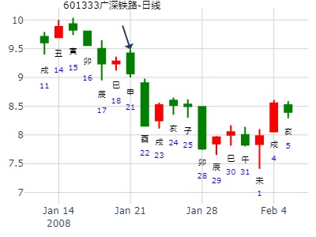
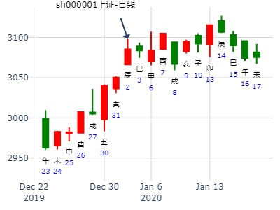
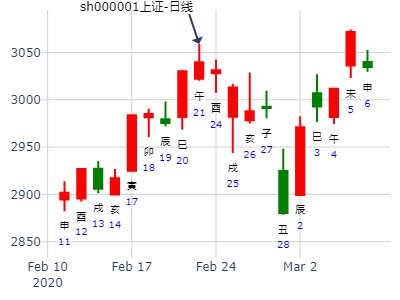
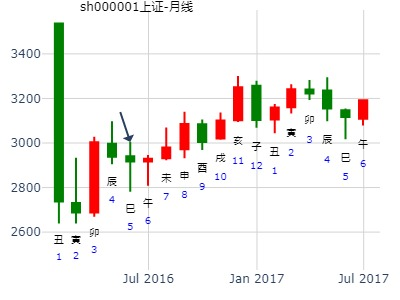

主帖标题: 广深铁路601333
广深铁路[601333]，今日涨跌？
排卦：元亨利贞网六爻在线排盘系统 http://www.china95.net
公历起卦时间：2008年1月21日4时48分 (手工指定)
干支：丁亥年 癸丑月 庚申日 戊寅时 （日空：子丑）
神煞：驿马－寅 桃花－酉 日禄－申 贵人－丑，未
艮宫：天泽履 艮宫：天泽履
六神 伏神 本 卦 变 卦
腾蛇 兄弟壬戌土 ▅▅▅▅▅ 兄弟壬戌土 ▅▅▅▅▅
勾陈 妻财丙子水 子孙壬申金 ▅▅▅▅▅ 世 子孙壬申金 ▅▅▅▅▅ 世
朱雀 父母壬午火 ▅▅▅▅▅ 父母壬午火 ▅▅▅▅▅
青龙 兄弟丁丑土 ▅▅ ▅▅ 兄弟丁丑土 ▅▅ ▅▅
玄武 官鬼丁卯木 ▅▅▅▅▅ 应 官鬼丁卯木 ▅▅▅▅▅ 应
白虎 父母丁巳火 ▅▅▅▅▅ 父母丁巳火 ▅▅▅▅▅

主帖标题: 股票今天财运
手摇卦
公历时间：2020年1月2日8时17分 农历时间：己亥年 十二月初八日辰时
干 支：己亥年 丙子月 甲辰日 戊辰时
旬 空：辰巳 申酉 寅卯 戌亥
神 煞：驿马─寅 桃花─酉 日禄─寅 贵人─丑，未
中国预测网纳甲六爻排盘
艮宫：天泽履
六神 伏 神 【本 卦】
玄武 ▄▄▄▄▄ 兄弟壬戌土
白虎 妻财丙子水 ▄▄▄▄▄ 子孙壬申金 世
螣蛇 ▄▄▄▄▄ 父母壬午火
勾陈 ▄▄ ▄▄ 兄弟丁丑土
朱雀 ▄▄▄▄▄ 官鬼丁卯木 应
青龙 ▄▄▄▄▄ 父母丁巳火
王注：无股票名，以大盘替代，莫当真。

主帖标题: 关注一2322278本周涨--张三汉
15日涨跌 手摇卦
公历时间：2020年1月15日6时51分 农历时间：己亥年 十二月二十一日卯时
干 支：己亥年 丁丑月 丁巳日 癸卯时
旬 空：辰巳 申酉 子丑 辰巳
神 煞：驿马─亥 桃花─午 日禄─午 贵人─酉，亥
艮宫：天泽履
六神 伏 神 【本 卦】
青龙 ▄▄▄▄▄ 兄弟壬戌土
玄武 妻财丙子水 ▄▄▄▄▄ 子孙壬申金 世
白虎 ▄▄▄▄▄ 父母壬午火
螣蛇 ▄▄ ▄▄ 兄弟丁丑土
勾陈 ▄▄▄▄▄ 官鬼丁卯木 应
朱雀 ▄▄▄▄▄ 父母丁巳火
注：张三汉代码加密，猜000888，仅供参考。
主帖标题: 六爻猜想：2020年2月21日上证收盘指数个位数?
2020年2月21日上证收盘指数个位数+4yn?
公历起卦时间：2020年2月21日14时22分 (电脑自动)
干支：庚子年 戊寅月 甲午日 辛未时 （日空：辰巳）
艮宫：天泽履 艮宫：天泽履
六神 伏神 本 卦 变 卦
玄武 兄弟壬戌土 ▅▅▅▅▅ 兄弟壬戌土 ▅▅▅▅▅
白虎 妻财丙子水 子孙壬申金 ▅▅▅▅▅ 世 子孙壬申金 ▅▅▅▅▅ 世
螣蛇 父母壬午火 ▅▅▅▅▅ 父母壬午火 ▅▅▅▅▅
勾陈 兄弟丁丑土 ▅▅ ▅▅ 兄弟丁丑土 ▅▅ ▅▅
朱雀 官鬼丁卯木 ▅▅▅▅▅ 应 官鬼丁卯木 ▅▅▅▅▅ 应
青龙 父母丁巳火 ▅▅▅▅▅ 父母丁巳火 ▅▅▅▅▅

主帖标题: 转发“个股卦例及反馈”
占事：太辰光至7月底如何走？
公历起卦时间：2021年2月9日13时20分 (电脑自动)
干支：辛丑年 庚寅月 戊子日 己未时 （日空：午未）
艮宫：天泽履
六神 伏神 本 卦
朱雀 兄弟壬戌土 ▅▅▅▅▅
青龙 妻财丙子水 子孙壬申金 ▅▅▅▅▅ 世
玄武 父母壬午火 ▅▅▅▅▅
白虎 兄弟丁丑土 ▅▅ ▅▅
螣蛇 官鬼丁卯木 ▅▅▅▅▅ 应
勾陈 父母丁巳火 ▅▅▅▅▅
占事：本周大盘趋势？ -姓名：gg 出生年:1981 性别：男
起卦方式：手动摇卦 易经股市论坛 在线排盘系统
公历时间：2012年3月26日13时21分
干支: 壬辰年癸卯月丙戌日 (旬空: 午未 )
旬 空：午未 辰巳 (午未) 辰巳
艮宫：天泽履
青龙 ▄▄▄▄▄ 兄弟壬戌土
玄武 妻财丙子水 ▄▄▄▄▄ 子孙壬申金 世
白虎 ▄▄▄▄▄ 父母壬午火
螣蛇 ▄▄ ▄▄ 兄弟丁丑土
勾陈 ▄▄▄▄▄ 官鬼丁卯木 应
朱雀 ▄▄▄▄▄ 父母丁巳火
东软集团600718在下周的走势--金玉堂
时间: 2015-03-15 20时33分
干支: 乙未年己卯月庚寅日 (旬空: 午未 )
履静卦
腾蛇 ▅▅▅▅▅ 兄弟戌土
勾陈 妻财子水▅▅▅▅▅ 子孙申金 世
朱雀 ▅▅▅▅▅ 父母午火
青龙 ▅▅ ▅▅ 兄弟丑土
玄武 ▅▅▅▅▅ 官鬼卯木 应
白虎 ▅▅▅▅▅ 父母巳火
主帖标题: 捍卫老祖宗感通卦尊严：测2020.3.16上证收盘走势？2赛01
测2020.3.16上证收盘十位数jnm2yn?
出生：2020 年 性别：男 占事：没填
公历起卦时间：2020年3月16日13时1分 (电脑自动)
干支：庚子年 己卯月 戊午日 己未时 （日空：子丑）
艮宫：天泽履 艮宫：天泽履
六神 伏神 本 卦 变 卦
朱雀 兄弟壬戌土 ▅▅▅▅▅ 兄弟壬戌土 ▅▅▅▅▅
青龙 妻财丙子水 子孙壬申金 ▅▅▅▅▅ 世 子孙壬申金 ▅▅▅▅▅ 世
玄武 父母壬午火 ▅▅▅▅▅ 父母壬午火 ▅▅▅▅▅
白虎 兄弟丁丑土 ▅▅ ▅▅ 兄弟丁丑土 ▅▅ ▅▅
螣蛇 官鬼丁卯木 ▅▅▅▅▅ 应 官鬼丁卯木 ▅▅▅▅▅ 应
勾陈 父母丁巳火 ▅▅▅▅▅ 父母丁巳火 ▅▅▅▅▅

主帖标题: 3.15上证收盘十位数-B
排卦：元亨利贞网六爻在线排盘系统
公历起卦时间：2021年3月15日8时15分 (电脑自动)
干支：辛丑年 辛卯月 壬戌日 甲辰时 （日空：子丑）
艮宫：天泽履
白虎 兄弟壬戌土 ▅▅▅▅▅
螣蛇 妻财丙子水 子孙壬申金 ▅▅▅▅▅ 世
勾陈 父母壬午火 ▅▅▅▅▅
朱雀 兄弟丁丑土 ▅▅ ▅▅
青龙 官鬼丁卯木 ▅▅▅▅▅ 应
玄武 父母丁巳火 ▅▅▅▅▅

履静卦,3月27日-31日上证？金玉堂
时间: 2023-03-25
干支: 癸卯年乙卯月壬午日 (旬空: 申酉 )
履静卦
白虎 ▅▅▅▅▅ 兄弟戌土
腾蛇 ▅▅▅▅▅ 子孙申金 世
勾陈 ▅▅▅▅▅ 父母午火
朱雀 ▅▅ ▅▅ 兄弟丑土
青龙 ▅▅▅▅▅ 官鬼卯木 应
玄武 ▅▅▅▅▅ 父母巳火
老板电器最近2周涨跌？
起卦时间：2017年4月21日10时21分 (在线摇卦)
丁酉年 甲辰月 戊寅日 丁巳时 （日空：申酉）
艮宫：天泽履 艮宫：天泽履
六神 伏神 本 卦 变 卦
朱雀 兄弟壬戌土 ▅▅▅▅▅ 兄弟壬戌土 ▅▅▅▅▅
青龙 妻财丙子水 子孙壬申金 ▅▅▅▅▅ 世 子孙壬申金 ▅▅▅▅▅ 世
玄武 父母壬午火 ▅▅▅▅▅ 父母壬午火 ▅▅▅▅▅
白虎 兄弟丁丑土 ▅▅ ▅▅ 兄弟丁丑土 ▅▅ ▅▅
腾蛇 官鬼丁卯木 ▅▅▅▅▅ 应 官鬼丁卯木 ▅▅▅▅▅ 应
勾陈 父母丁巳火 ▅▅▅▅▅ 父母丁巳火 ▅▅▅▅▅
电脑摇卦(起卦方式)
占问事宜：2020年股市大盘？
公历：2016年5月5日8时39分，星期四。
干支：丙申年 壬辰月 丁亥日 甲辰时 (卦身：辰)
主变卦 天泽履(艮宫) [空亡:午、未]
青龙 ▅▅▅▅▅ 兄弟壬戌土
玄武 妻财丙子水 ▅▅▅▅▅ 子孙壬申金 世
白虎 ▅▅▅▅▅ 父母壬午火
螣蛇 ▅▅ ▅▅ 兄弟丁丑土
勾陈 ▅▅▅▅▅ 官鬼丁卯木 应
朱雀 ▅▅▅▅▅ 父母丁巳火

天泽履静卦，5月底6月初大盘
时间: 2019-05-23 14时33分
干支: 己亥年己巳月庚申日 (旬空: 子丑 )
履静卦
腾蛇 ▅▅▅▅▅ 兄弟戌土
勾陈 妻财子水▅▅▅▅▅ 子孙申金 世
朱雀 ▅▅▅▅▅ 父母午火
青龙 ▅▅ ▅▅ 兄弟丑土
玄武 ▅▅▅▅▅ 官鬼卯木 应
白虎 ▅▅▅▅▅ 父母巳火
2019-05-23
上证指数6月20-24日行情预测--再人
时间: 2022-06-18 9时11分
干支: 壬寅年丙午月壬寅日乙巳时 (旬空: 辰巳 )
履静卦
白虎 ▅▅▅▅▅ 兄弟戌土
腾蛇 妻财子水▅▅▅▅▅ 子孙申金 世
勾陈 ▅▅▅▅▅ 父母午火
朱雀 ▅▅ ▅▅ 兄弟丑土
青龙 ▅▅▅▅▅ 官鬼卯木 应
玄武 ▅▅▅▅▅ 父母巳火
2022-06-18-再人620周卦。履静卦。

主帖标题: 2011年 08月11日 上指 模拟予想趋势
出生：SH000001 年 性别： 占事：AUG 11 2011
排卦：元亨利贞网六爻在线排盘系统 http://www.china95.net
公历起卦时间：2011年8月11日0时27分 (手工指定)
农历：辛卯年七月十二日子时
干支：辛卯年 丙申月 戊戌日 壬子时 （日空：辰巳）
神煞：驿马－申 桃花－卯 日禄－巳 贵人－丑，未
艮宫：天泽履
六神 伏神 本 卦
朱雀 兄弟壬戌土 ▅▅▅▅▅
青龙 妻财丙子水 子孙壬申金 ▅▅▅▅▅ 世
玄武 父母壬午火 ▅▅▅▅▅
白虎 兄弟丁丑土 ▅▅ ▅▅
腾蛇 官鬼丁卯木 ▅▅▅▅▅ 应
勾陈 父母丁巳火 ▅▅▅▅▅
【600749】西藏旅游下周——乾隆币卦
姓名： 男 占事：600749下周三天
起卦方式：手动摇卦 易经股市论坛
公历时间：2015年8月30日13时35分
干 支：乙未年 甲申月 戊寅日 己未时
旬 空：辰巳 午未 (申酉) 子丑
艮宫：天泽履
六神 伏 神 【本 卦】
朱雀 ▄▄▄▄▄ 兄弟壬戌土
青龙 妻财丙子水 ▄▄▄▄▄ 子孙壬申金 世
玄武 ▄▄▄▄▄ 父母壬午火
白虎 ▄▄ ▄▄ 兄弟丁丑土
螣蛇 ▄▄▄▄▄ 官鬼丁卯木 应
勾陈 ▄▄▄▄▄ 父母丁巳火
主帖标题: 明天大盘
出生：2020 年 性别：男 占事：没填
公历起卦时间：2020年8月13日20时41分 (在线摇卦)
干支：庚子年 甲申月 戊子日 壬戌时 （日空：午未）
艮宫：天泽履 艮宫：天泽履
六神 伏神 本 卦 变 卦
朱雀 兄弟壬戌土 ▅▅▅▅▅ 兄弟壬戌土 ▅▅▅▅▅
青龙 妻财丙子水 子孙壬申金 ▅▅▅▅▅ 世 子孙壬申金 ▅▅▅▅▅ 世
玄武 父母壬午火 ▅▅▅▅▅ 父母壬午火 ▅▅▅▅▅
白虎 兄弟丁丑土 ▅▅ ▅▅ 兄弟丁丑土 ▅▅ ▅▅
螣蛇 官鬼丁卯木 ▅▅▅▅▅ 应 官鬼丁卯木 ▅▅▅▅▅ 应
勾陈 父母丁巳火 ▅▅▅▅▅ 父母丁巳火 ▅▅▅▅▅
中阳， 不一定准确，仅供参考娱乐
主帖标题: 2017年10月大盘涨跌卦
占事：2017年10月大盘涨跌？
公历起卦时间：2017年9月29日16时37分 (手工指定)
干支：丁酉年 己酉月 己未日 壬申时 （日空：子丑）
神煞：驿马－巳 桃花－子 日禄－午 贵人－子，申
艮宫：天泽履
六神 伏神 本 卦
勾陈 兄弟壬戌土 ▅▅▅▅▅
朱雀 妻财丙子水 子孙壬申金 ▅▅▅▅▅ 世
青龙 父母壬午火 ▅▅▅▅▅
玄武 兄弟丁丑土 ▅▅ ▅▅
白虎 官鬼丁卯木 ▅▅▅▅▅ 应
腾蛇 父母丁巳火 ▅▅▅▅▅
主帖标题: 2010年 12月17日 上指 模拟予想
2010-12-16
干支：庚寅年 戊子月 庚子日 癸未时 旬空：辰巳
六神 伏神 艮宫：天泽履
【本 卦】
滕蛇 ▅▅▅▅▅ 兄弟壬戌土
勾陈 妻财丙子水 ▅▅▅▅▅ 子孙壬申金 世
朱雀 ▅▅▅▅▅ 父母壬午火
青龙 ▅▅ ▅▅ 兄弟丁丑土
玄武 ▅▅▅▅▅ 官鬼丁卯木 应
白虎 ▅▅▅▅▅ 父母丁巳火
主帖标题: 2010年最后一期：大盘指数涨跌擂台赛
占事: 27--31趋势 起卦方式：手动摇卦
公历时间：2010年12月22日
干支：己亥年 丙子月 丙午日 丁酉时
旬空：辰巳 申酉 寅卯 辰巳
神煞：驿马─申 桃花─卯 日禄─巳 贵人─酉，亥
艮宫：天泽履
六神 伏 神 【本 卦】
青龙 ▄▄▄▄▄ 兄弟壬戌土
玄武 妻财丙子水 ▄▄▄▄▄ 子孙壬申金 世
白虎 ▄▄▄▄▄ 父母壬午火
螣蛇 ▄▄ ▄▄ 兄弟丁丑土
勾陈 ▄▄▄▄▄ 官鬼丁卯木 应
朱雀 ▄▄▄▄▄ 父母丁巳火
占事：2018年上证大盘涨跌？
公历起卦时间：2017年12月29日16时36分 (手工指定)
干支：丁酉年 壬子月 庚寅日 甲申时 （日空：午未）
神煞：驿马－申 桃花－卯 日禄－申 贵人－丑，未
艮宫：天泽履 艮宫：天泽履
六神 伏神 本 卦 变 卦
腾蛇 兄弟壬戌土 ▅▅▅▅▅ 兄弟壬戌土 ▅▅▅▅▅
勾陈 妻财丙子水 子孙壬申金 ▅▅▅▅▅ 世 子孙壬申金 ▅▅▅▅▅ 世
朱雀 父母壬午火 ▅▅▅▅▅ 父母壬午火 ▅▅▅▅▅
青龙 兄弟丁丑土 ▅▅ ▅▅ 兄弟丁丑土 ▅▅ ▅▅
玄武 官鬼丁卯木 ▅▅▅▅▅ 应 官鬼丁卯木 ▅▅▅▅▅ 应
白虎 父母丁巳火 ▅▅▅▅▅ 父母丁巳火 ▅▅▅▅▅
主帖标题: 上证指数阳历一月份行情走势？
性别：男 占事:丑月行情走势？
起卦方式：手动摇卦 (周易世界 www.zhouyiworld.com)
公历时间：2020年12月31日12时39分
干 支：庚子年 戊子月 戊申日 戊午时
旬 空：辰巳 午未 寅卯 子丑
艮宫：天泽履
六神 伏 神 【本 卦】
朱雀 ▄▄▄▄▄ 兄弟壬戌土
青龙 妻财丙子水 ▄▄▄▄▄ 子孙壬申金 世
玄武 ▄▄▄▄▄ 父母壬午火
白虎 ▄▄ ▄▄ 兄弟丁丑土
螣蛇 ▄▄▄▄▄ 官鬼丁卯木 应
勾陈 ▄▄▄▄▄ 父母丁巳火
试测12.20上证收盘个位数？
出生：2021 年 性别：男 占事：没填
排卦：元亨利贞网六爻在线排盘系统 https://www.china95.net
公历起卦时间：2021年12月18日13时13分 (电脑自动)
干支：辛丑年 庚子月 庚子日 癸未时 （日空：辰巳）
艮宫：天泽履 艮宫：天泽履
六神 伏神 本 卦 变 卦
螣蛇 兄弟壬戌土 ▅▅▅▅▅ 兄弟壬戌土 ▅▅▅▅▅
勾陈 妻财丙子水 子孙壬申金 ▅▅▅▅▅ 世 子孙壬申金 ▅▅▅▅▅ 世
朱雀 父母壬午火 ▅▅▅▅▅ 父母壬午火 ▅▅▅▅▅
青龙 兄弟丁丑土 ▅▅ ▅▅ 兄弟丁丑土 ▅▅ ▅▅
玄武 官鬼丁卯木 ▅▅▅▅▅ 应 官鬼丁卯木 ▅▅▅▅▅ 应
白虎 父母丁巳火 ▅▅▅▅▅ 父母丁巳火 ▅▅▅▅▅